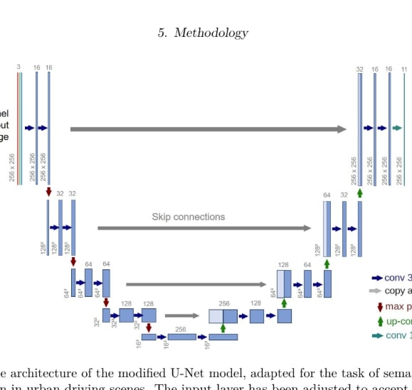
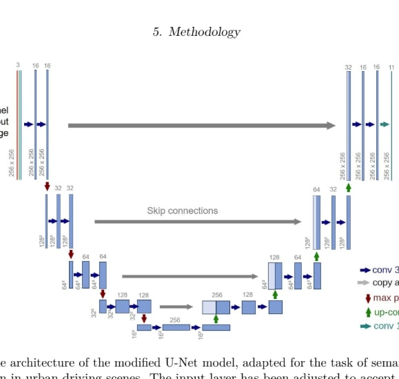
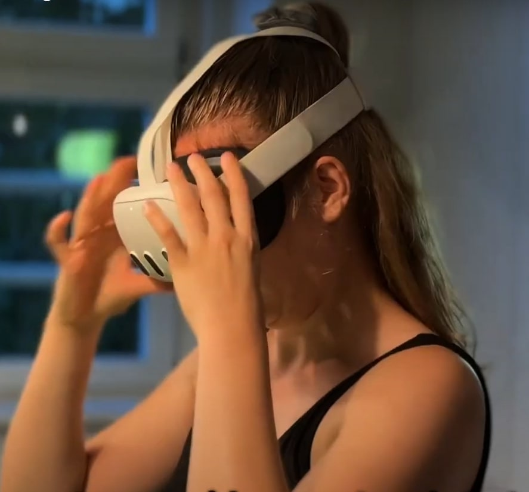
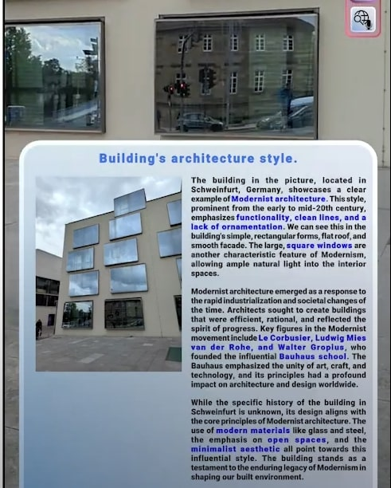
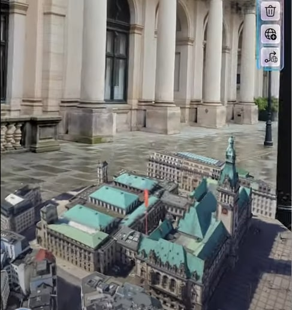
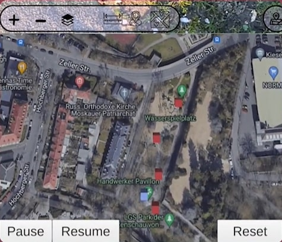

Moritz Cermann
I am a student at TU Delft, Netherlands doing my Master's degree in Geomatics.
I earned my Bachelor of Engineering from the Technical University for Applied Sciences in Würzburg, Germany and completed an internship at Lufthansa Technik AG in Hamburg where I worked as an XR Developer on Augmented and Virtual Reality solutions for aviation.
My academic and professional interests include geospatial solutions, applied computer vision, deep learning for Earth observation and AR/VR technologies.
Academic Work
 Open-Vocabulary 3D Scene Understanding from RGB Images: A General-Purpose Pipeline for Indoor and Outdoor Environments
B.Eng. Thesis, THWS
Created a general-purpose pipeline that reconstructs 3D scenes from RGB images and enables open-vocabulary semantic understanding without requiring depth data or specialized sensors. Successfully demonstrated on both indoor datasets and large-scale urban drone imagery.

Implementation and Traning of a Semantic Segmentation Model, Deployed for Real-Time Applications using Unity Sentis
Project Thesis, THWS
Implemented and trained and a lightweight U-Net model for real-time semantic segmentation in urban scenes, optimized for mobile deployment with Unity Sentis.
Open-Vocabulary 3D Scene Understanding from RGB Images: A General-Purpose Pipeline for Indoor and Outdoor Environments
B.Eng. Thesis, THWS
Created a general-purpose pipeline that reconstructs 3D scenes from RGB images and enables open-vocabulary semantic understanding without requiring depth data or specialized sensors. Successfully demonstrated on both indoor datasets and large-scale urban drone imagery.

Implementation and Traning of a Semantic Segmentation Model, Deployed for Real-Time Applications using Unity Sentis
Project Thesis, THWS
Implemented and trained and a lightweight U-Net model for real-time semantic segmentation in urban scenes, optimized for mobile deployment with Unity Sentis.
Open-Vocabulary 3D Scene Understanding from RGB Images: A General-Purpose Pipeline for Indoor and Outdoor Environments
B.Eng. Thesis, THWS
Created a general-purpose pipeline that reconstructs 3D scenes from RGB images and enables open-vocabulary semantic understanding without requiring depth data or specialized sensors. Successfully demonstrated on both indoor datasets and large-scale urban drone imagery.
Implementation and Traning of a Semantic Segmentation Model, Deployed for Real-Time Applications using Unity Sentis
Project Thesis, THWS
Implemented and trained and a lightweight U-Net model for real-time semantic segmentation in urban scenes, optimized for mobile deployment with Unity Sentis.
Selected Projects

Stitch - Virtual sewing assistant
XR Creator Con Hackathon 2024, Berlin ( First Place - Meta Track )
A mixed reality sewing assistant for Meta Quest 3 that replaces traditional printed patterns with interactive 3D models. It allows the users to extract and trace virtual 2D patterns directly onto fabric.

travel-compAnIon
Google AI Hackathon
AI travel app that identifies buildings via camera view and provides AR-guided city exploration using Unity, Google Gemini, and location-aware spatial understanding.


Location based AR
Augmented Reality (AR) application that enables global placement of virtual objects by clicking on 2D map. It converts coordinates to precise AR locations using device sensors and Google Maps API.